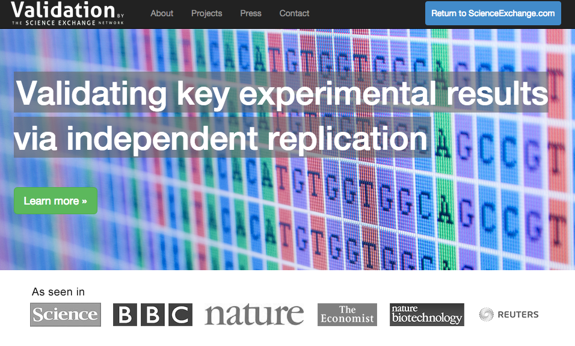

Exploring Open Science
Bret Davidson | NCSU Libraries
LAUNC-CH 2015
What is Open Science?
Open Data
Open Access
Open Notebook
Open Source
Make scientific research accessible to all levels of an inquiring society.

Nullius in Verba
"Take nobody's word for it."
How Science Goes Wrong
"Too much trusting, not enough verifying."
Economist, www.economist.com/news/leaders/21588069-scientific-research-has-changed-world-now-it-needs-change-itself-how-science-goes-wrongOnly 6 out of 53 “landmark" cancer studies could be reproduced.
Nature, www.nature.com/nature/journal/v483/n7391/full/483531a.htmlReproducibility Crisis
Reproducibility Initiative
Reproducibility Initiative receives $1.3M grant to validate 50 cancer studies.
Science Exchange, blog.scienceexchange.com/2013/10/reproducibility-initiative-receives-1-3m-grant-to-validate-50-landmark-cancer-studies/Can Open Science Help?
Center for Open Science
Open Science Framework
R OpenSci
At rOpenSci we are creating packages that allow access to data repositories through the R statistical programming environment that is already a familiar part of the workflow of many scientists. Our tools not only facilitate drawing data into an environment where it can readily be manipulated, but also one in which those analyses and methods can be easily shared, replicated, and extended by other researchers.
Questions for Libraries
Should academic libraries have a role in supporting Open Science?
How does Open Science interact with current professional incentives?
What technology should libraries provide?
How does Open Science support interdisciplinarity?
Can Open Science be partially adopted?
More to Come!
Thanks!
bddavids@ncsu.edu
Special thanks to Marcus Hanwell (@mhanwell) for several citations.